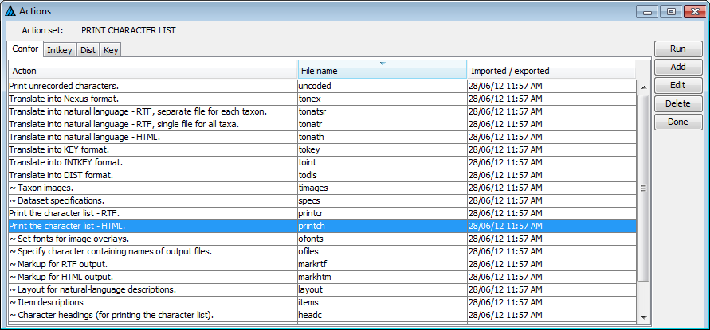

The Action Sets Dialog
Action sets are sets of instructions that will be read and
processed by various programs, in order to produce output such as
natural-language descriptions, or to carry out pre-defined operations in the
interactive identification program, Intkey. Templates for various commonly used
action sets are automatically included when a new dataset is created as
described above. These templates are based on a subset of the action sets
included in the sample data supplied with the programs (see Experimenting with the Sample Data). The
sample data contain references to taxon names and to character and state
numbers that will usually be inconsistent with or inappropriate for another
data set. Rather than deleting directives containing such information, they
have been turned into comments, in order to serve as examples.

Heading (Action set:)
The 'Action set:' label displays a description of the selected action set (or directive file). This description is
derived from the presence of a COMMENT or SHOW directive in the file contents. It identifies the action set that
the buttons on the right hand side of the screen will act upon.
Tabs (Confor, Intkey, Dist, Key)
The tabs below the heading label sort the action sets into groups defined by the DELTA program that will be
used if the action set is activated by use of the 'Run' button.
The behaviour of these programs are described in the DELTA user guide.
The main table
The action-set descriptions shown in the column labelled
'Action' are taken from a 'COMMENT' or 'SHOW' directive at the start of each
action set. The text in the 'File name' column is the internal file name of the
action set, and also the name of the corresponding external file when the data
are exported to DELTA text files. The 'Imported/exported' column show the date
and time when the action set was most recently imported from or exported to its
external counterpart.
The sets whose descriptions start with '~' are partial sets,
which are incapable of producing output by themselves, but are invoked by other
action sets.
The action buttons
- Run - executes the selected action set using the appropriate program.
- Add - creates a new action set and displays the Action Set Editor
to allow it's contents to be edited..
- Edit - displays the Action Set Editor to allow the contents of the
selected action set to be edited.
- Delete - removes the selected action set from the data set.
- Done - closes the Action Sets Dialog.